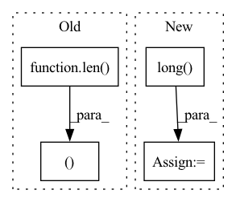

Pattern ID :8876

Before Change
for xi, xs in enumerate(X):
for yi, ys in enumerate(Y):
for zi, zs in enumerate(Z):
lx, ly, lz = len(xs), len(ys), len(zs)
// construct points
xx, yy, zz = custom_meshgrid(xs, ys, zs)
xyzs = torch.cat([xx.reshape(-1, 1), yy.reshape(-1, 1), zz.reshape(-1, 1)], dim=-1) // [N, 3], in [-1, 1]
After Change
// construct points
xx, yy, zz = custom_meshgrid(xs, ys, zs)
coords = torch.cat([xx.reshape(-1, 1), yy.reshape(-1, 1), zz.reshape(-1, 1)], dim=-1) // [N, 3], in [0, 128)
indices = raymarching.morton3D(coords).long() // [N]
xyzs = 2 * coords.float() / (self.grid_size - 1) - 1 // [N, 3] in [-1, 1]
// cascading
In pattern: SUPERPATTERN
Frequency: 3
Non-data size: 4
Instances
Fragment ID: 32589841
Project Name: ashawkey/torch-ngp
Commit Name: f02ec4824ef16a650c5a4acac510ec6c224a4337
Time: 2022-06-02
Author: ashawkey1999@gmail.com
File Name: nerf/renderer.py
M Class Name: NeRFRenderer
N Class Name: NeRFRenderer
M Method Name: update_extra_state(3)
N Method Name: update_extra_state(3)
M Parent Class: nn.Module
N Parent Class: nn.Module
M File Name: nerf/renderer.py
N File Name: nerf/renderer.py
M Start Line: 454
M End Line: 488
N Start Line: 461
N End Line: 490
'>
Before Change
for xi, xs in enumerate(X):
for yi, ys in enumerate(Y):
for zi, zs in enumerate(Z):
lx, ly, lz = len(xs), len(ys), len(zs)
// construct points
xx, yy, zz = custom_meshgrid(xs, ys, zs)
world_xyzs = torch.cat([xx.reshape(-1, 1), yy.reshape(-1, 1), zz.reshape(-1, 1)], dim=-1).unsqueeze(0).to(count.device) // [1, N, 3]
After Change
// construct points
xx, yy, zz = custom_meshgrid(xs, ys, zs)
coords = torch.cat([xx.reshape(-1, 1), yy.reshape(-1, 1), zz.reshape(-1, 1)], dim=-1) // [N, 3], in [0, 128)
indices = raymarching.morton3D(coords).long() // [N]
world_xyzs = (2 * coords.float() / (self.grid_size - 1) - 1).unsqueeze(0) // [1, N, 3] in [-1, 1]
// cascading
'>
Fragment ID: 32589840
Project Name: ashawkey/torch-ngp
Commit Name: f02ec4824ef16a650c5a4acac510ec6c224a4337
Time: 2022-06-02
Author: ashawkey1999@gmail.com
File Name: nerf/renderer.py
M Class Name: NeRFRenderer
N Class Name: NeRFRenderer
M Method Name: mark_untrained_grid(4)
N Method Name: mark_untrained_grid(4)
M Parent Class: nn.Module
N Parent Class: nn.Module
M File Name: nerf/renderer.py
N File Name: nerf/renderer.py
M Start Line: 397
M End Line: 438
N Start Line: 397
N End Line: 439
'>
Before Change
data = self.dist_mat.flatten()
else:
idxs = torch.where(labels == i)[0]
N = len(idxs)
self.compute_score(model_params, idxs)
row = torch.cat((row, idxs.repeat_interleave(N)), dim=0)
col = torch.cat((col, idxs.repeat(N)), dim=0)
data = np.concatenate([data, self.dist_mat.flatten()], axis=0)
sparse_simmat = csr_matrix((data, (row.numpy(), col.numpy())), shape=(self.N_trn, self.N_trn))
After Change
total_greedy_list = list(np.array(total_greedy_list)[rand_indices])
gammas = list(np.array(gammas)[rand_indices])
elif self.selection_type == "Supervised":
idxs = torch.arange(0, self.N_trn).long()
N = len(idxs)
self.compute_score(model_params, idxs)
row = idxs.repeat_interleave(N)
col = idxs.repeat(N)
'>
Fragment ID: 32589856
Project Name: decile-team/cords
Commit Name: 0b9fa0d7a62b59ab3d740399460db130d1d933ad
Time: 2021-11-10
Author: krishnateja.killamsetty@utdallas.edu
File Name: cords/selectionstrategies/SL/craigstrategy.py
M Class Name: CRAIGStrategy
N Class Name: CRAIGStrategy
M Method Name: select(3)
N Method Name: select(3)
M Parent Class: DataSelectionStrategy
N Parent Class: DataSelectionStrategy
M File Name: cords/selectionstrategies/SL/craigstrategy.py
N File Name: cords/selectionstrategies/SL/craigstrategy.py
M Start Line: 276
M End Line: 291
N Start Line: 276
N End Line: 281